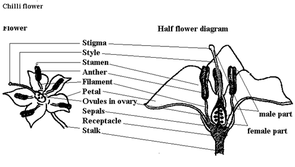
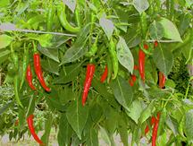

GPBR 112 :: Lecture 19 :: CHILLI (Capsicum frutescense)

Chillies widely used as vegetable and spice is an often cross pollinated crop, where the extend of cross pollination is upto 7 to 36 per cent. It belongs to the family solanaceae. It is also known as hot pepper and botanically it is known as capsicum annuum. The quality seed production techniques of chillies comprises of the following steps.
Botany: Often Cross pollinated vegetable. The flower is protogynous. Anther dehisces only half to 5 ½ hr after stigma becomes receptive. Anthesis in chilli occurs between 6.00 and 9.00 hr. Flower remains open for 2 to 3 days, receptivity of stigma was the highest at the day of flower anthesis.

Method of seed production : Seed to seed
Stages of seed production : Breeder seedàFoundation seedàCertified seed.
Varieties: K.1, K.2, K.3, Co.1, Co.2, PKM.1, MDU.1, Bagyalakshmi.
Hybrids: KT.1, (Pusa Deepti), Solar Hybrid 1, Solar Hybrid 2. Early Bounty, Indira, Lario, Hira, Bharat.
Season : June‑July, February‑March, September‑ October.
Land requirement : There are no land requirement as of previous crops, but the land should be free from volunteer plants. Generally areas affected by wilt or root rot may be avoided. Crop rotation must be followed to avoid endemic Solanaceous pests.
Isolation requirement : Minimum isolation distance of 400 M for foundation and hybrid seed and 200 M for certified seed production are necessary.
Seed rate : Seed required for one hectare is 500 g to 1 kg for variety; for hybrids ‑ Female = 200 g and male = 50 g
Nursery : Sow the seeds in raised nursery bed of 20 cm height, in rows of 5 cm gap and covered with sand. Eight and ten nursery beds will be sufficient to transplant one acre. Apply 2 kg of DAP 10 days before pulling out of seedling.
Transplanting: The seedlings of 30‑35 days old are ready for transplanting. Transplanting may be done on the ridges in the evening.
Foliar spray: To arrest the flower drop, NAA (Planofix) can be sprayed @ 4ml/L. Very light irrigation is also done arrest the flower drop.
Manuring : Apply 50 tones of FYM/ha for irrigated crop. Basal 0:70:70 kg of NPK and 50 kg of N at 15 days after transplanting and 50 kg N at 45th days after transplanting.
Roguing: Field inspection and roughing should be done both for varieties and hybrid at different stages based on the plant height and its stature, flower colour and pod characters. The plants affected with leaf blight, anthracnose and viral diseases should be removed from the seed field.
Pest and disease management: The important pest attacking chilli and capsicum are thrips, aphids, pod or fruit borer and mites. The thrips and aphids can be controlled by spraying Dimecron (systemic pesticide), pod borer can be controlled by spraying Nuvacron and the mites can be controlled by spraying Kelthane. The major diseases affecting the plants are die back or fruit rot, powdery mildew and bacterial leaf spot. Spray Dithane M‑45 for control of die back, Karathane for powdery mildew and Agromycin for leaf spot disease control.
Hybrid seed production: The crossing operation can be performed as per the methods outlined for tomato and brinjal hybrid seed production. However, hand emasculation and pollination is somewhat difficult since the flowers are minute. Hence use of male sterile lines can also be employed for hybrid seed production.
Harvesting and processing: Harvesting should be done in different pickings. First and last one or two pickings can be harvested for vegetable purpose. The well ripened fruits with deep, red colour alone should be collected in each picking. After harvest, fruit rot infected fruits are to be discarded. The harvested pods are to be dried under shade for one (or) two days and then under sun for another 2 or 3 days. Before drying pods are to be selected for true to type and graded for seed extraction. The seed are extracted from graded dried pods. The pods are taken in gunny bag and beaten with pliable bamboo sticks. The seeds are cleaned by winnowing and dried to 10% moisture content over tarpaulin. Then seeds are processed with BSS 8 wiremesh screens. For large scale seed extraction, the TNAU model chilli seed extractor may be used.
Seed Yield : 50-80 Kg/ha
Seed Certification
Number of Inspections
A minimum of three inspections shall be made as follows:
1. The first inspection shall be made before flowering on order to verify isolation, volunteer plants, and other relevant factors,
2. The second inspection shall be made during flowering to check isolation, offtypes and other relevant factors
3. The third inspection shall be made at maturity and prior to harvesting to verify true nature of plant and other relevant factors
Specific standards:
Factors |
Foundation |
Certified |
Off types |
0.1% |
0.2% |
Designated diseased plant |
0.1% |
0.5% |
The designated diseases are caused by Collertotictum capsici and leaf blight caused by Alternaria solari.
Seed standards (Variety & Hybrid)
Factors |
Foundation |
Certified |
Pure seed |
98% |
98% |
Inert matter |
2% |
2% |
Other crop seeds |
5/kg |
10/kg |
Weed seeds |
5/kg |
10/kg |
Germination |
60% |
60% |
Moisture content |
8% |
8% |
For VP Container |
6% |
6% |
| Download this lecture as PDF here |